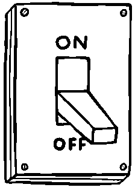

A manufacturing company faces increasing demand for its products. With the rise in automation practices within the industry, the company faces the choice of implementing automation or not implementing automation.
You have chosen to incorporate automation into your daily tasks. Congratulations on choosing to embrace the cutting-edge world of automation in your day-to-day work life.
As an automation worker, you are at the forefront of technological advancements, contributing to increased efficiency and innovation. Your decision to embed automation tools into your workflow puts you in a pivotal role, driving our company towards a more streamlined and forward-thinking future.
We encourage you to stay updated on the latest automation technologies. Moving forward, you must take time out of your day to regularly attend relevant training programs for updated technologies and the subsequent skill examinations, in order to continuously modernize your skill set.
As a company that values human work, note that you can decide to indivdually switch on or off specific automation processes. Semi-regularly doing this can help migitate absolute dependecy on automation in our work environment.
Please note the following information and resources on this webpage is always available to you to view, to learn more about automation in work environments. You can choose to enable/disable automated work services at any time by contacting the Human-Machine-Relations Department. As a company who values human labor, your pay will not be affected by this choice.
You have chosen not to incorporate automation into your daily tasks.
We value your decision to embrace a more traditional approach to work, and your commitment to maintaining a hands-on approach to your responsibilities. While automation is a powerful tool, we recognize that some individuals prefer the human touch and take pride in their craftsmanship.
As a non-automation worker, you are encouraged to hone your skills, collaborate with automation colleagues, and contribute to our collective success through your unique expertise. Your dedication to preserving the traditional work ethos is highly valued, and we support your choice to craft a career that aligns with your personal preferences.
Please note the following information and resources on this webpage is always available to you to view, to learn more about automation in work environments. You can choose to enable/disable automated work services at any time by contacting the Human-Machine-Relations Department.
As a company who values human labor, your pay will not be affected by this choice. We understand that automation has the power to generate higher revenue and productivity; However, as a non-automation worker, your presence is invaluable as you contribute to the company’s independence from absolute-automation.
THE WORKPLACE'S AUTOMATE-METER
Automation in the workplace is a multifaceted topic that has far reaches consequences, both positive and negative. In our envisioned future, a system is established where individuals have the power to define their own boundaries with automation in their work lives, based off Meadow's seventh intervention point:
Self-organization. We propose self-organization among workers to adapt to and collaborate with automated systems based on their own preferences and the specific tasks at hand. Essentially, workers will have the power to 'turn off and turn on' automation processes within their day-to-day worklife.
Further, individuals will have access to transparent communication between themselves and the automated systems. Establishing effective communication channels and providing information on the implications of automation within their lives (based on Meadow's leverage point #5). With information and choice given to indivdual workers a flexible system structure can be creates that allows for the integration and adaptation of new automation technologies while preserving the human workforce's meaningful participation -- also enabling people to have the ability to retain non-automation-dependant experiences.
Balancing feedback loops is another integral aspect of the future of automation and its ultimately compatability with society. Established feedback mechanisms must maintain a balance between labor, automation and the overarching value of both. An individual worker's ability to decide the digital nature of their work environment is just one step to a healthy relationship between oneself and their career.